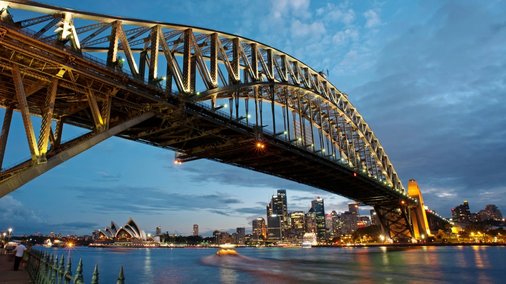
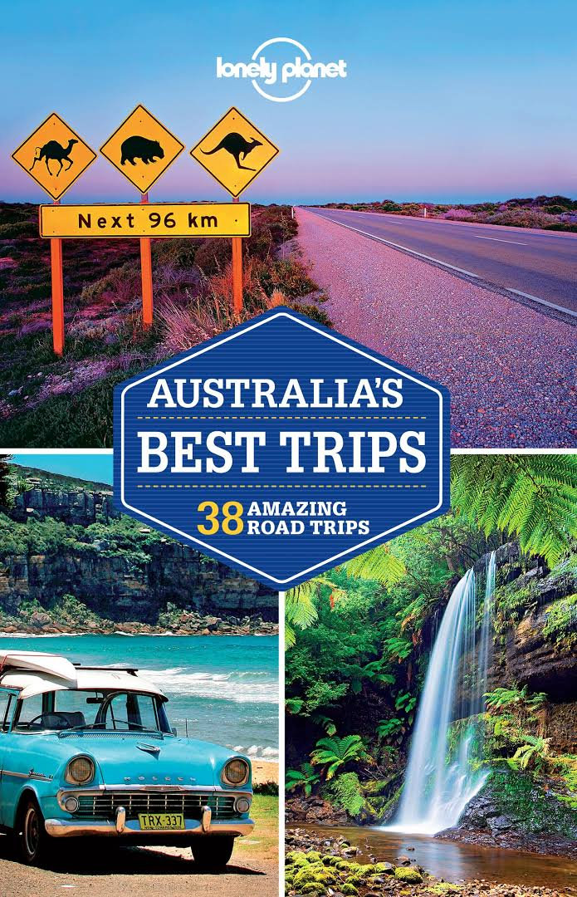
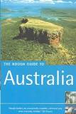
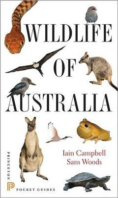
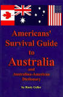

Travel to live, Live to Travel
Travel to live, Live to Travel

Australia, officially the Commonwealth of Australia,[10] is a sovereign country comprising the mainland of the Australian continent, the island of Tasmania and numerous smaller islands. It is the largest country in Oceania and the world's sixth-largest country by total area. The neighbouring countries are Papua New Guinea, Indonesia and East Timor to the north; the Solomon Islands and Vanuatu to the north-east; and New Zealand to the south-east
Australia's capital is Canberra
and its largest city is Sydney
.
Accomendation-In northern Queensland, you can find hostel prices for about $20 AUD per night. On the west coast, it’s about $15-20 AUD, but from Noosa down to Melbourne (the densely populated east coast), expect to pay $25–35 AUD per night. The smaller the dorm, the higher the cost. Private rooms are $55–110 AUD per night.
Transportation-But outside of the heavily populated and highly competitive east coast, it’s not always that easy. Because of limited competition, flying is very expensive except on the west coast. It’s often cheaper to fly than get a bus out there. If you can get a deal on a tourist bus, that can be cheaper than either Greyhound or flying. On the east coast, Greyhound offers many good-value passes. I’d take them over any other transportation. The Cairns to Melbourne pass is $558 AUD.e
Food-Your average meal in Australia will run you about $15–20 AUD. A good meal at a nice restaurant will run you about $40 AUD. Even McDonald’s is expensive—a value meal is about $8 AUD.
|  | Lonely Planet Australia's Best Trips by Anthony Ham Discover the freedom of open roads while touring Australia with Lonely Planet Australia's Best Trips, your passport to uniquely encountering the country by car. Featuring 39 amazing road trips, from 2-day escapes to 2-week adventures on which you can experience the world-class surf beaches and iconic landforms of Victoria's Great Ocean Road, the epic big skies and forever horizons of the Nullarbor Plain, and more; all with your trusted travel companion. Hit the road! |  | The Rough Guide to Australia - Australia Travel Guide by Rough Guides Detailed full-colour maps help you negotiate the wilds of the Outback or simply find the best place for a flat white. Adding depth to your travels, our Contexts section sheds light on Aboriginal culture, indigenous wildlife and over 40,000 years of Australian history. An indispensable travel companion, The Rough Guide to Australia will help you make the most of your trip of a lifetime. |
|  | Wildlife of Australia Ideal for the nature-loving traveler, Wildlife of Australia is a handy photographic pocket guide to the most widely seen birds, mammals, reptiles, amphibians, and habitats of Australia. The guide features more than 400 stunning color photographs, and coverage includes 350 birds, 70 mammals, 30 reptiles, and 16 frogs likely to be encountered in Australia's major tourist destinations. |  | Americans' Survival Guide to Australia and by Rusty Geller This is the Operator's Manual for Australia. This book covers the basic and essential information the author and his family learned in order to survive their first few years living in Australia. It will help you avoid making the same embarrassing mistakes and asking the same dumb questions they did. Includes a 1,500 word Australian-American Dictionary. An essential tool for tourists, business travelers and migrants. |